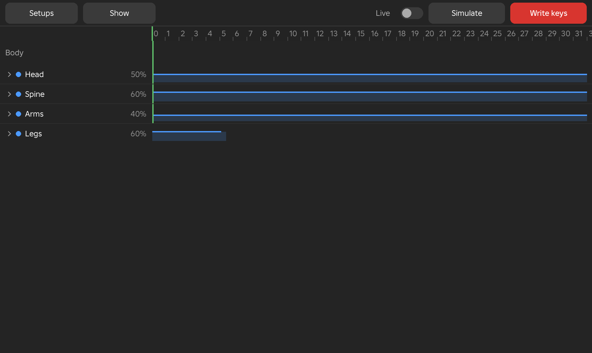
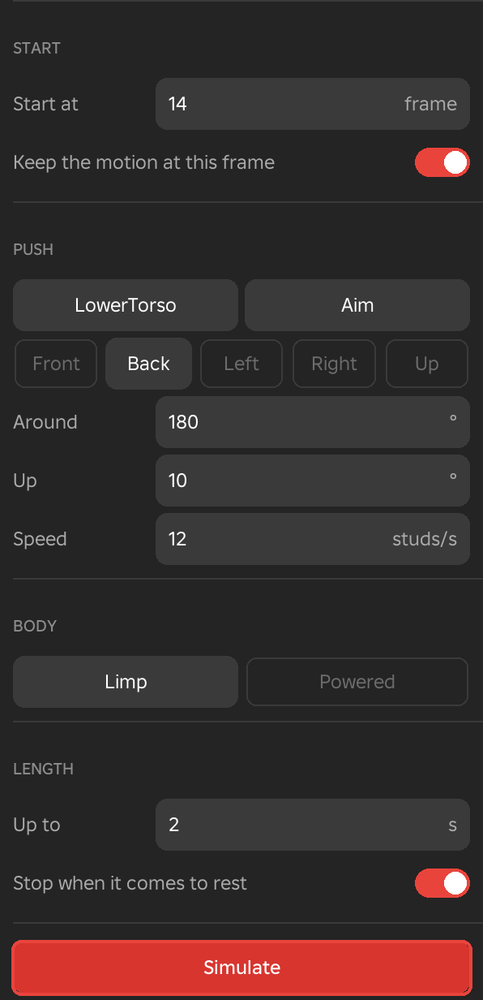

Physics
The Physics window runs one physics simulation over an animation and writes the result as keys, for a hit, a fall, wind or floating. You build the simulation from bodies, forces and colliders. The Ragdoll window, described at the end of this page, pushes the body at one frame and lets Roblox physics take it from there.

Physics Window
- Menu
- Pose ‣ Physics ‣ Physics window...
- View ‣ Windows ‣ Physics
The Physics window sets up one simulation for the animation from bodies, forces and colliders, shows the result as a purple ghost of the rig, and writes it into the animation as keys. The animation holds at most one Physics item. It is listed in the Modifiers window, and the window opens on it, so changing a value and writing the keys again redoes the whole simulation.
The simulation runs on an invisible copy of the rig, so the rig itself does not move while it runs. The copy is joined by a ball joint or a hinge at each limb, limited to the same ranges as Ragdoll, and what the rig holds is welded to the hand. Only the simulated parts get new keys.
On the left, the tree lists the Body (Head, Spine, Arms and Legs, which each open to their parts), Hold its place, Forces, Colliders and Settings. On the right there is a lane for every row over the whole animation. A body's strength is a filled curve, and a part that plays its keys is a solid bar. A force is a diamond or a span that you drag in time. A green line marks where the simulation starts, and a red line is the playhead. Selecting a row shows its values on the Physics page of the Inspector, which opens by itself. Press Enter to write the keys, and Esc closes the window.
To build a simulation, choose a preset, select a body part in the tree and set its values, and add forces with the plus button on the Forces row. Click Simulate and scrub the timeline, and the purple ghost shows the result. When it looks right, click Bake to keys.
Notes
Colliders do not move with the animation of other rigs.
Example
For example, to make a character react to a hit, choose the Hit reaction preset, move the green start line to the frame of the hit, press Simulate and judge the ghost, and write the keys when the body gives and recovers the way you want.
See Also
Physics page of the Inspector, Ragdoll, Physics in the View menu
Toolbar
The toolbar runs along the top of the window. Presets and Show are at the left, and Live, Simulate and Bake to keys are at the right.
Presets
Presets opens the list of starting points and your own presets. Choosing one replaces the values in the window. Frames inside a preset are kept relative to its start, so a preset fits wherever the simulation starts in the animation. The colliders you had chosen stay.
Options
- Blown by wind
- A body that is mostly pulled toward its keys with a strong hold, pushed by a gusty wind from the left for 240 frames. It does not stop at rest, and it runs for 4 seconds.
- Float
- No gravity and a loose body, given a gentle upward push and thick air, so it drifts slowly for 4 seconds.
- Hit reaction
- A push from behind. The body gives at once, is pulled back toward its keys, and blends back into the animation about 35 frames after the start.
- Knocked back
- A hard push from behind and upward into a nearly limp body. It runs for 3 seconds.
- Legs stay, body takes it
- The legs play their keys and stay planted while the rest of the body takes a push from the front, then blends back into the animation.
- Ragdoll fall
- A completely limp body given a push from behind. It runs for 3 seconds.
- Your own presets
- The values you saved, kept for every place, are listed under their own heading, and so are the presets shared in the current place. You can save the current values under a name, share them in this place for everyone who opens it, or put back the default values.
Example
For example, start from Knocked back for a character thrown across a room, then lower the push's Speed and add a wind force to turn it into a gentler stumble.
See Also
Presets in Adjust lists presets in the same way for the other tools.
Show
Show chooses what the simulation draws in the viewport while the window is open. Each choice is a tick, and the choices are remembered.
Options
- Bodies
- Blue boxes on the simulated parts. A box is more solid where the part's strength is higher at the playhead. It is on by default.
- Joint limits
- How far each simulated joint can swing, drawn as a cone for a ball joint and as an arc for a hinge. It is off by default.
- Forces
- The arrows and circles that show pushes, wind, pulls, blasts, lifts and black holes. It is on by default.
- Colliders
- The outlines of the objects chosen under Colliders, when the simulation hits only chosen objects. It is off by default.
Live
Live makes the simulation run again whenever a value changes. A moment after the last change the result on the ghost is replaced. Turning Live on runs the simulation once at once. It is off by default.
Example
For example, with Live on, drag the Speed of a push and watch the ghost change as you let go, until the fall lands where you want it.
Simulate
Simulate runs the simulation and shows the result on the purple ghost, without touching the animation. While it runs, the button reads Stop, and a bar at the foot of the window shows how far it has got. The foot of the window then says which frames were simulated. Scrub the timeline or play to watch the ghost.
The simulation starts at the start frame with the motion the body has there if Keep the motion at the start is on. It stops at the time set in Settings, or sooner when the body comes to rest, if Stop when it comes to rest is on. A force that is still to come keeps it going.
Bake to Keys
Bake to keys writes the simulation into the animation as its Physics item. Keys are written on the simulated joints only, and a part set to Plays its keys keeps its own keys. The new keys are one for every frame from the start of the simulation, thinned to the keys the motion needs, and the whole step is one undo step. If the last Simulate used the same values, its result is reused. If not, the simulation runs first.
If the simulation ends after the last frame, the animation grows to fit. Without Blend back, the keys after the end of the simulation are removed, so the body stays where physics left it. With Blend back, the motion eases into the animation's own keys. See Settings.
Example
For example, after a Hit reaction preset looks right on the ghost, Bake to keys writes it into the animation, and later you can open the Modifiers window, change the push's Speed and write it again.
Body
The Body rows decide how each part of the rig behaves in the simulation.
Body
The Body lists four regions, Head, Spine, Arms and Legs. Click the arrow of a region to open its parts. Every part of the rig is a body, and so is what the rig holds, which is welded to its hand. A part uses its own values if it has any, then its region's values, and then the default Mass, Friction and Bounce listed below.
A part is either Simulated or Plays its keys. A simulated part is pulled toward its keyed pose as strongly as its strength curve says, where 0 is completely limp and 100 % is pulled hard. A part that plays its keys is held exactly on its keys and pushes whatever it touches. A locked limb always plays its keys.
Hold Ctrl or Shift and click a second body to select two. Right-click then offers Collide with each other for the pair. Two parts that are joined do not collide unless you tick it, and any other two parts do collide unless you clear it. The choice is saved with the preset.
Options
These values are on the Physics page of the Inspector when a region or a part is selected.
- Mode
- Simulated or Plays its keys.
- Strength over the clip
- A curve over the animation. It sets how hard the part is pulled toward its keys at each frame. The defaults are 50 % for the head, 60 % for the spine, 40 % for the arms and 60 % for the legs.
- Mass
- How heavy the part is, from 1 to 1000 %. The default is 100 %.
- Friction
- How much the part grips what it touches, from 0 to 200 %. The default is 50 %.
- Bounce
- How much the part rebounds, from 0 to 100 %. The default is 10 %.
- Swing, Twist from, Twist to
- For a part joined by a ball joint, how far it swings from its rest line and how far it twists about itself, in degrees.
- Bends from, Bends to
- For a part joined by a hinge, such as an R15 elbow or knee, the range it bends through, in degrees.
- Use the region's values, Reset the joint
- Go back to the region's values for the part, and to the default limits of the joint.
Example
For example, set the Legs region to Plays its keys so the character stays planted while the Spine and Arms stay limp and are knocked about by a push.
Hold Its Place
Hold its place is how hard the whole body is pulled to the place its keys put it in the world, as a curve over the animation. At 0 the body falls freely, and at 100 % it stays where it is keyed. It acts on the torso and carries the rest of the body with it.
The default is 0. The Hit reaction preset starts with a full hold and eases it off for a moment as the body gives.
Example
For example, a character knocked off its feet by an explosion uses a hold of 0 so it flies freely, while a character leaning into a gale uses a high hold so it only sways.
Forces
Forces push the simulated body. Each force has a row in the tree and a lane that you drag in time.
Forces
The plus button on the Forces row adds a force. The choices are Push, Wind, Pull, Blast, Lift, Black hole and Drag. A new force starts at the playhead, or at the start of the simulation if the playhead is earlier. Its row names the force, and its lane shows a diamond for a push or blast at one frame, and a span for the others.
Drag a diamond or a span to move it in time. Drag an end of a span to change its frames. Right-click a force's row to Turn it off or on, Duplicate it or Delete it. A force that is turned off stays in the list and has no effect.
Wind, Pull, Blast, Lift and Black hole have a Radius, and Pull, Blast, Lift and Black hole also have a Falloff. A Pull, Blast, Lift or Black hole can also be centred on an object, or ride a path that you draw.
Options
- Radius
- How far the force reaches from its centre, in studs. 0 reaches everywhere, except for a Blast, which needs a radius of at least 0.5 studs.
- Falloff to the edge
- A curve that sets how strong the force is from its centre at the left to its radius at the right. By default it fades evenly to the edge. Wind has no falloff curve.
- Centre on the selected object
- For Pull, Blast, Lift and Black hole. Centres the force on the part or model selected in the Explorer.
- Draw its path, Clear its path
- For Pull, Blast, Lift and Black hole. Draw its path lets you draw a stroke on the ground, and the force's centre follows it from the force's first frame to its last. Clear its path takes it off.
See Also
Push
A Push is a hit. It gives one body part a sudden shove at a point on it, away from where the hit comes from, at one frame or spread over several frames.
Options
- At frame, Over frames
- The frame where the push lands. Over frames spreads it across that many frames, and 1 means all at once. A push spread over frames is a span.
- Part
- The body part that is hit. It starts as the root part.
- Aim on the body
- Click the body where it is hit. The push goes away from the camera, through that point. The button reads Click the body... while it waits, and Esc cancels.
- Around
- The direction the hit comes from around the rig, from 0 to 360°. 0 is from the front, 90 from the left, 180 from behind and 270 from the right. The default is 180.
- Up
- How steeply the hit points upward, from −90 to 90°. The default is 10°.
- Speed
- How hard the hit is, from 0 to 400 studs a second. The default is 14.
Example
For example, a punch to the chest from the front is a push on the torso with Around at 0, a Speed of 20 and a little Up.
Wind
Wind blows steadily on the whole body over a span of frames, with gusts that come and go. With a radius it blows only near its centre.
Options
- From, To
- The frames the wind blows. A new wind runs from the playhead to the end of the animation.
- Around, Up
- The direction the wind blows toward, as for a push. The defaults are 90° and 0°.
- Strength
- How strong the wind is, in studs a second squared, from 0 to 2000. The default is 40.
- Radius
- 0 blows everywhere. A larger value blows only within that many studs of the wind's centre.
- Gusts
- How much the strength comes and goes, from 0 to 300 %. The default is 50 %.
- A gust every
- How many frames pass between gusts, from 1 to 600. The default is 20.
Example
For example, a cloak-wearing character on a cliff is given a wind of 60 from the side with gusts at 80 % over the whole animation.
Pull
A Pull draws the body toward a point over a span of frames. The point can be centred on an object or can ride a path.
Options
- From, To
- The frames the pull acts. A new pull lasts 30 frames from the playhead.
- Strength
- How strongly it pulls, from −2000 to 2000 studs a second squared. A value below 0 pushes away. The default is 40.
- Radius, Falloff to the edge
- How far the pull reaches and how it fades. A new pull starts 4 studs above the rig's root.
Example
For example, a pull centred on a magnet prop makes a character's arms and torso lean toward it while the legs stay planted.
Blast
A Blast throws the body outward from a point, at one frame or spread over several. A part closer to the centre is thrown harder.
Options
- At frame, Over frames
- As for a push.
- Speed
- How fast it throws things, from 0 to 1000 studs a second. The default is 40.
- Launch
- How much it throws things upward, from 0 to 500 %. The default is 0.
- Spin
- How much it turns things round the up axis, in turns a second, from −10 to 10.
- Radius, Falloff to the edge
- The reach of the blast. The radius starts at 12 studs and must be at least 0.5. A new blast starts 3 studs in front of the rig and 1 stud below its root.
Example
For example, an explosion placed directly behind a character, with a Launch of 100 %, throws it forward and up.
Lift
A Lift pushes the body upward over a span of frames, inside its radius. Set Around and Up to push it in any other direction.
Options
- From, To
- The frames the lift acts. A new lift lasts 30 frames.
- Around, Up
- The direction of the lift. Until you set them, the lift goes straight up.
- Strength
- How strongly it lifts, from −2000 to 2000 studs a second squared. The default is 60.
- Radius, Falloff to the edge
- The reach of the lift. A new lift starts with a radius of 12 studs, centred 2 studs below the rig.
Example
For example, a lift beneath a character in a rising updraft raises its body over 30 frames and lets it settle.
Black Hole
A Black hole is a pull that also swirls what it draws in round its centre, over a span of frames.
Options
- From, To
- The frames it acts. A new black hole lasts 45 frames.
- Strength
- How strongly it pulls, from −2000 to 2000 studs a second squared. The default is 60.
- Spin
- How fast it swirls, in turns a second, from −10 to 10. A negative value turns the other way. The default is 1.
- Radius, Falloff to the edge
- The reach of the force. A new black hole starts with a radius of 16 studs and its centre 2 studs above and 6 studs in front of the rig.
Example
For example, a magic vortex in front of a character drags its body in and spins it before it is released.
Drag
Drag slows everything down, like thick air or water, over a span of frames. It has no centre and no radius.
Options
- From, To
- The frames the drag acts. A new drag runs from the playhead to the end of the animation.
- Thickness
- How much it slows things, from 0 to 60. 0 is air, and a higher value is like water. The default is 2.
Example
For example, a character floating in a pool is given a thickness of 20 so its limbs drift slowly and settle.
Colliders and Settings
These two rows set what the body hits and how long the simulation runs.
Colliders
Colliders sets what the simulated body can hit. The simulation can hit the whole place, or only the objects you choose, and the floor under the rig can be added to those.
Options
- Hits
- The whole place, or Selected objects only.
- And the floor under the rig
- With Selected objects only, adds the floor the rig stands on. It is on by default.
- Objects
- The objects the body hits, when Hits is set to Selected objects only. Select parts or models in the Explorer and add them here.
Example
For example, to have a character fall onto one crate, set Hits to Selected objects only, add the crate and keep the floor, and the body ignores the rest of the scene.
Settings
Settings sets when the simulation starts, how long it lasts, how gravity acts, and how the body returns to the animation afterwards. The row shows the start frame beside it.
Options
- Start at
- The frame where the simulation starts. Before it, the animation plays its keys. It starts as the playhead frame the first time you open the window.
- Up to
- The longest the simulation can run, in seconds, from 0.1 to 30. The default is 2.
- Stop when it comes to rest
- Ends the simulation early when the body has stopped moving for a moment and no force is still to come. It is on by default.
- Keep the motion at the start
- Gives the body the speed it had at the start frame. It is on by default.
- Gravity: Strength
- How strong gravity is, from −500 to 500 %. 100 % is the place's gravity, and 0 means no gravity.
- Gravity: Way
- Which way gravity pulls, which is Down, Up, Forward, Back, Left or Right. Forward, Back, Left and Right follow the way the rig faces.
- Blend back into the clip
- Eases the body from the simulation back into the animation's own keys. Without it the body stays where physics left it. It is off by default.
- From frame, Over
- For Blend back, the frame where the easing begins, and the number of frames it takes. The default is 15 frames.
Example
For example, a character stumbling after a hit uses Blend back from about 35 frames after the start, over 15 frames, so it recovers into the next pose instead of staying down.
Ragdoll
The Ragdoll window is a quicker tool for one kind of simulation, a body that is pushed and falls.
Ragdoll
- Menu
- Pose ‣ Physics ‣ Ragdoll...
- Pose ‣ This limb ‣ Ragdoll...
- Right-click
- A limb ‣ Ragdoll...
Ragdoll... pushes the body at a frame and lets Roblox physics take it, for falls, deaths, knockdowns and hit reactions. The result is baked to keys. Right-click the limb that is hit and choose Ragdoll..., or choose it from the Physics menu and choose the part in the window.
The rig does not move while it simulates. A copy of it falls and collides with the parts of the place. Each joint has limits, and an R15 elbow or knee bends one way only. A locked limb keeps its keyed pose, and a held object stays in the hand. The window works on R6 and R15 rigs and on other Motor6D rigs, which use generic limits. The result plays on a purple ghost, so you can scrub the timeline to judge it before baking.

Options
- Start at
- The frame where the push lands. It starts as the playhead frame.
- Keep the motion at this frame
- Gives the body the speed it had on that frame. It is on by default.
- Part, Aim
- The first button names the part that is hit, and clicking it opens a list of parts. Aim lets you press on the body where the hit lands and drag the way it goes in the viewport. A longer drag pushes harder.
- Front, Back, Left, Right, Up
- Set the direction the push comes from in one click. Front pushes from the front, Back from behind, Left and Right from either side, and Up pushes straight up.
- Around, Up, Speed
- The direction and strength of the push. Around is 0 from the front, 90 from the left, 180 from behind and 270 from the right, and the default is 180. Up tilts it, from −90 to 90°, and the default is 10°. Speed is in studs a second, from 0 to 400, and the default is 12.
- Limp, Powered
- Limp lets every joint go slack. Powered keeps part of the pose, with a strength from 0 to 100 % for the Head, Spine, Arms and Legs, which start at 60 %, and a Keep standing value that pulls the torso toward its keyed place. Keep standing starts at 0.
- Up to
- The longest the simulation can run, in seconds, from 0.2 to 10. The default is 2.
- Stop when it comes to rest
- Ends the simulation early once the body has stopped moving. It is on by default.
- Simulate, Discard
- Simulate runs the fall and shows it on the ghost, and while it runs the button becomes Stop. After a run, Simulate runs it again, and Discard throws the result away.
- Blend back, At, Over
- After a run, Blend back eases the fall into the animation's own keys. At is the frame where the easing starts, and Over is the number of frames it takes, from 1 to 240. Without Blend back, the keys after the fall are removed, so the body stays down.
- Bake into
- After a run, The keys writes the fall into the animation's own keys. A new layer writes it onto an Add layer named Ragdoll instead, so you can mute the layer to see the animation without the fall. The choice only appears when animation layers are available.
- Bake
- Writes a key on every frame of the fall on every limb, thins the keys, and takes one undo step. Only the rotations are written, so the joints never come apart, and the root follows the torso. Enter presses the main button, and Esc closes the window.
Example
For example, to make a character fall when it is struck, go to the frame of the hit, right-click the chest, choose Ragdoll..., drag Aim across the body in the direction of the blow, click Simulate, scrub to check the ghost, turn on Blend back if the character should stand up again, and click Bake.